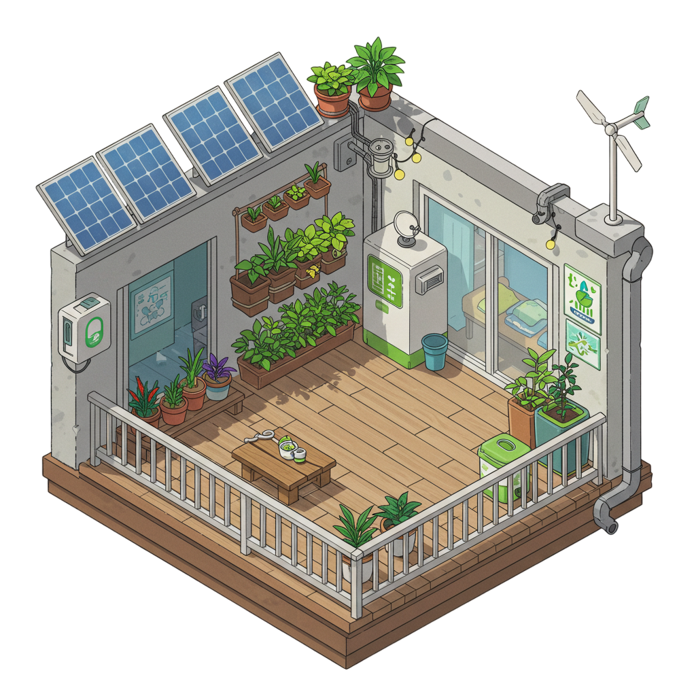
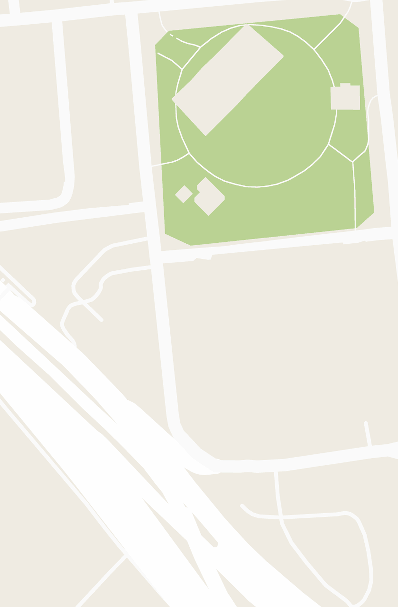
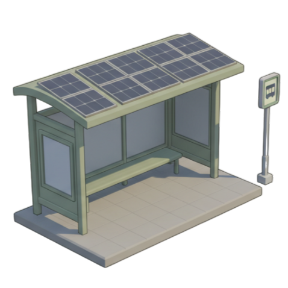

我的綠色家園

2.5D 綠色家園概念展示
環保評分：10
可用能源元素：
Solara☀️: 50
Wind🌬️: 30
Aqua💧: 0
Bio-Fuel♻️: 0
Kinetic⚡: 0
🔧 可用設施
☀️ 太陽能板 (等級 1)
目前產能: 2 Solara/小時
儲存容量: 0/10
🌬️ 風力發電機 (等級 1)
目前產能: 2 Wind/小時
儲存容量: 0/10
香港綠蹤遊 (AR概念模擬)


提示：走近綠色能源設施，體驗AR技術獲取能源！完整版本將支援更多香港綠色地點。
關於「源人步走」
🏆 團隊資訊
團隊名稱：綠色源人
所屬院校：香港中文大學
參賽項目：三菱電機綠續創科盃2025
🎮 遊戲概念
透過遊戲化互動，讓玩家在虛擬世界中體驗綠色能源的魅力
🎯 玩法說明
- 家園建設：升級各種綠色能源設施
- AR+GPS探索：結合擴增實境與定位技術，發現香港各地的綠色能源熱點
- 源動裝備：透過步行計步產生能量
🌱 教育目標
提升市民對綠色能源的認知，推廣綠色生活方式，提升市民對綠色能源的接受程度和興趣
⚙️ 原型說明
此為概念原型，專注於核心功能概念展示，未包含完整後端系統。所有數據僅存在於瀏覽器會話中，刷新頁面將重置所有進度。